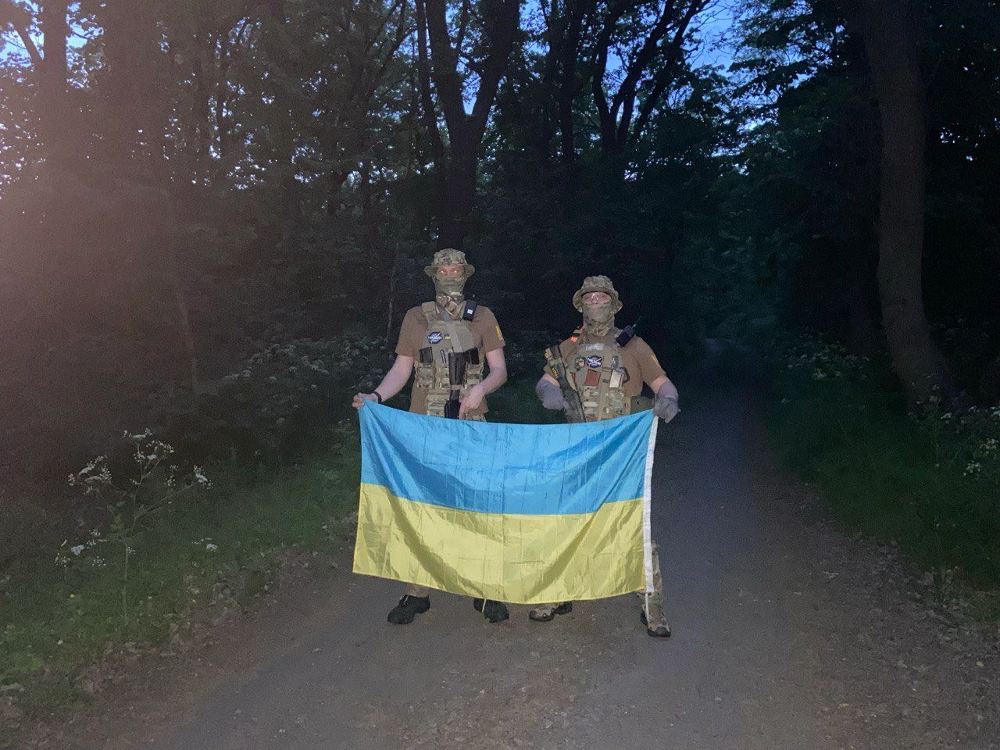
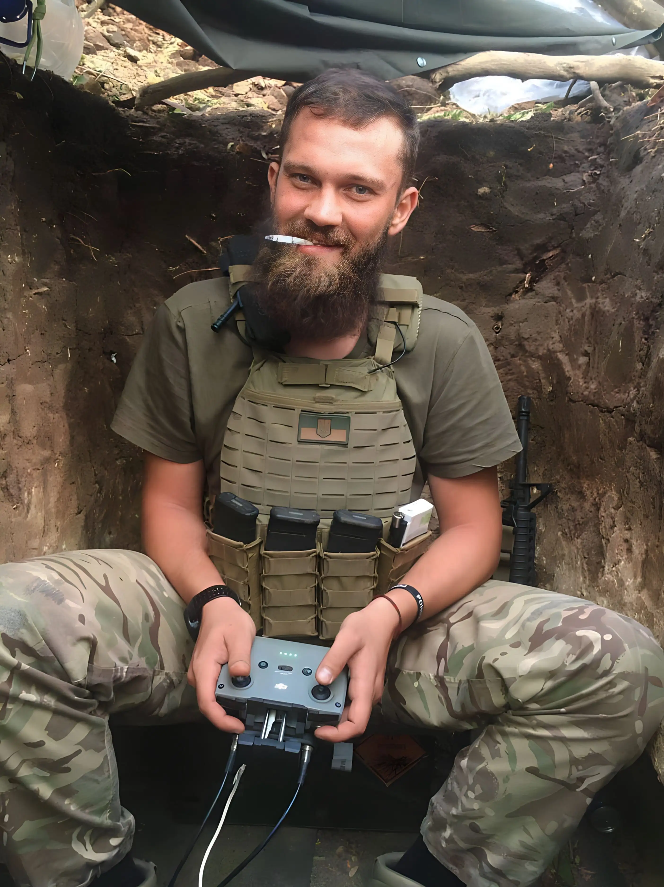
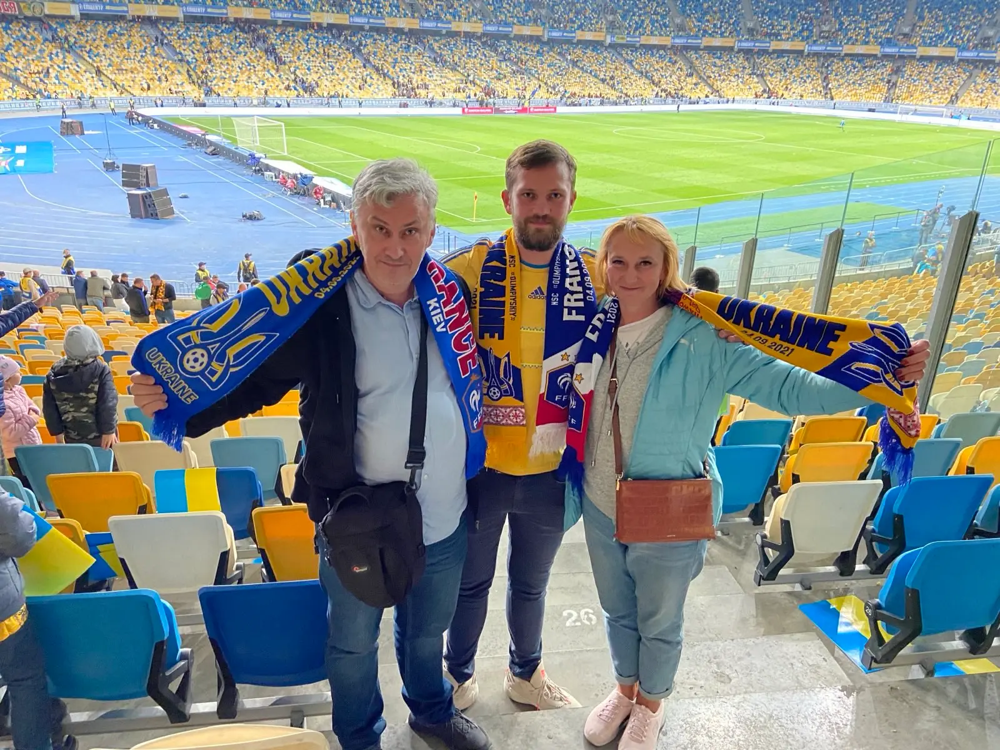
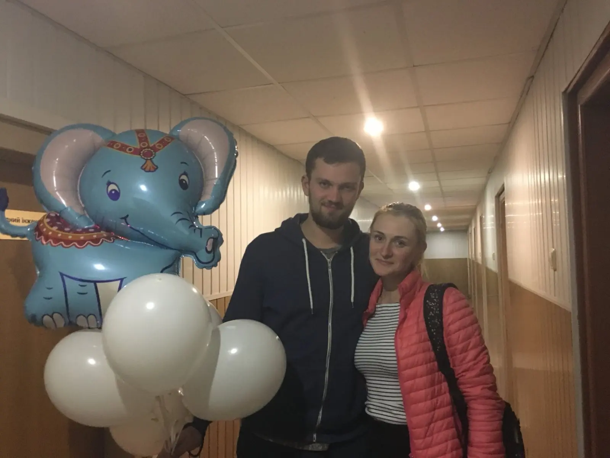
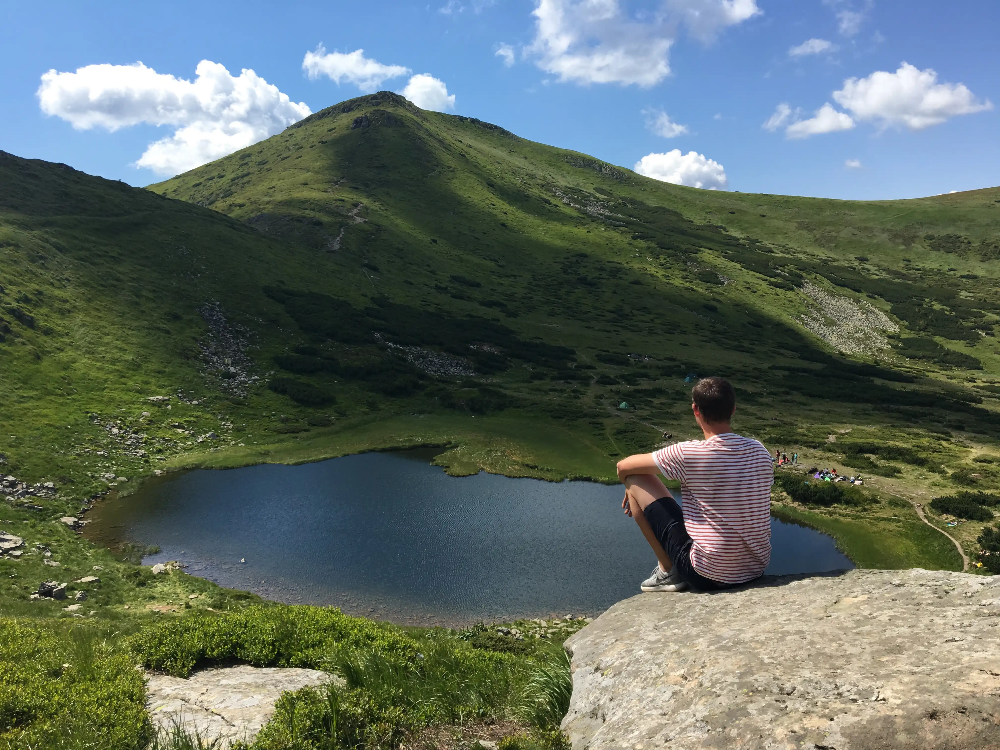

Ігор «Слон» Утюж
Захисник України, боєць 78-го окремого десантно-штурмового полку, учасник Революції Гідності. Людина, яка двічі зробила вибір йти першим — у 17 років на Майдан, і у 25 — на повномасштабну війну.
«Якщо мені врятували життя — отже, я потрібен для чогось більшого»
Light through memory
«Памʼять — це світло, яке не згасає»
Хто він був для нас
Коротка історія життя, характеру та шляху Ігоря — людини, яка вміла бути поруч і вміла йти вперед.
Шлях воїна
Від Майдану до 78-го окремого десантно-штурмового полку. Ключові віхи військового шляху Ігоря.


Фрагменти життя
Ігор умів радіти простим речам — грі, місту, моментам із друзями. Кілька кадрів його живої історії.



Символи його шляху
Те, що уособлює характер Ігоря, його позивний і те, за що він стояв до кінця.


Слова, які залишились
Залишити свій слід у памʼяті
Якщо ця історія вас зачепила — поставте свічку або скажіть кілька слів. Цього достатньо.

Ваша свічка горить
Свічку запалено